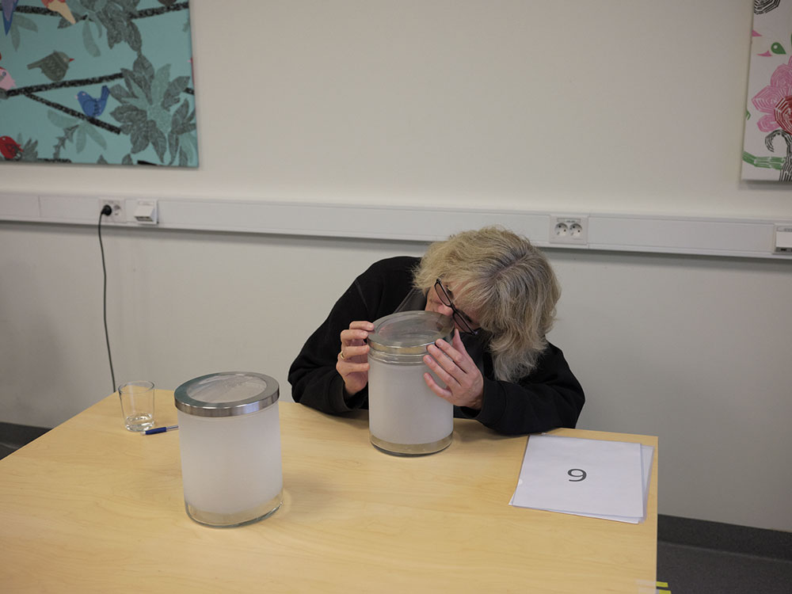
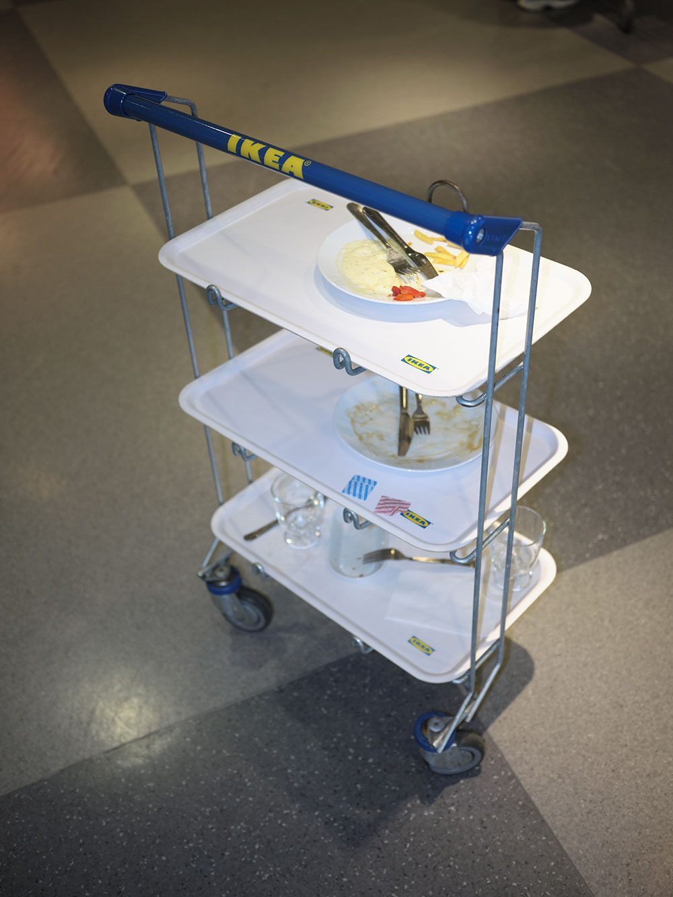
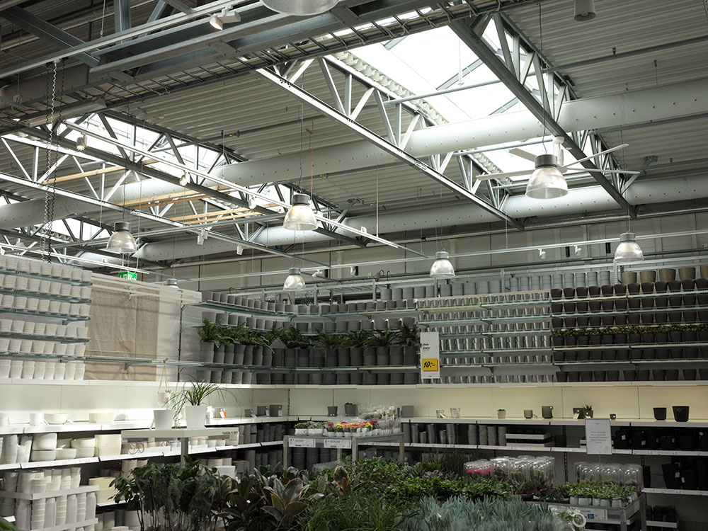

TUESDAY SEPTEMBER 27 2022
Yesterday’s email announced the unpredictability of my journey: “you might not be able to get into IMC. So sorry. I haven’t had a word from my spokesman.” Today, 12:15-email, T: “I heard from them.” If we’re lucky we’ll be able to sneak in tomorrow at 14:30 according to their schedule. (Our plans for KK just changed. But it’s 16:26 and still no answer from A (IMC).
17:30 Philip arrives at Centralen. Before heading home, we detoured to Svenskt Tenn. It’s warm and cozy: a boutique. But it’s also as if we were at IKEA, or as if IKEA has influenced ST—well, except for its scale and prices, of course. NK is also on our way. We stop there too. Some Swedish shopping history on the way. Magnificence, night lights, spectacles, mixed with urban life, cars heading home, customers rushing to parking lots—to NK’s parking lot. There’s a bit of IKEA-Land here too.
Our tour is not over. 17:58. Next to NK, we see the new IKEA City Stockholm. We have a look. We’re in, I think, no we’re not, where is it? We’re elsewhere: a mall. It’s a store in a mall. Ah, here is it! Found it! The concept seems the same from a quick look but getting closer there are smaller yellow trolleys for portable items, stuff for the non-city-drivers. Ground floor: market area. Wait, where is fiction?

Okay, we got it, upstairs: home rooms, well communicated, dreamy and classically following the logic of strolling from one to another. A one-bedroom flat hosting perhaps a young couple, kitchen, bed, sofa, all in one room: a roomlife. But the rooms here are not that many, where are they?
We leave—in the end we came for a quick visit—we should look for the subway. We take the escalators down. IKEA, again? In the middle of the mall, we turn and face the yellow-blue sign leading to the store one more time. Here are the rooms! Quick tour, again. Let’s try to be quick. We go to the subway and wait, another IKEA section? We cannot miss it. We get in. Another quick tour. Now, it’s time 19:00. We leave. I feel dizzy.
WEDNESDAY SEPTEMBER 28 2022 08:00
We text each other, pack up and head to the train station: Älmhult is our destination. Outside, we’re moving from urban fabrics to pastoral landscapes. A few km outside Stockholm, we’re immersed in the Swedish countryside.
13:15 Arrived at the IKEA Museum: check in, pay, and go for a quick lunch before R welcomes us at the IKEA Test Lab. Horrible food, seemingly nice from the menu description but not as tasty in reality.
The welcoming words are “no photos, no touching and don’t move around without me.” But after this “don’t do policy,” she enthusiastically escorts us around almost anywhere their staff works. We talk to a chemist and a professional working in a laundry there for testing products. But we finish the tour, and I am left astonished, left with a feeling of extreme technologization –almost only robots and AI machines work on the ground level. And what struck me is that R says she doesn’t know what they (IoS staff) are after. “I don’t understand why they want to test this material or another and what the result will prove. We here just evaluate the performance of products and provide verified results.” We’re experiencing the compartmentalization of areas, staff, and contents ourselves while walking from one area to another. It’s raining cats and dogs and so strolling through the vast IKEA-Land area isn’t as easy as I remembered.

We met T at the Museum. He has to leave so has no time to take us to the Archive today but sounds willing to be the gate opener for the next few days.
We then go to the Museum. Something is cooking, an event perhaps. There are seats staged in a sort of auditorium. It’s closing time, the entrance staff is nice and lets us in for free. We go up. I go through the Our Roots section again. But, meanwhile, I have a closer look at the architecture and I realize that what was the former IKEA store is now selling books (mostly) on IKEA. So is this the new type of merchandise IKEA has on offer?—its Museum function is fictionally assigned. We’re still in a consumption site but of a slightly different kind. Wait, but they’re also selling something else. A section of the new exhibition Democratic Design—a classic in the IKEA motto—shows pieces and artifacts of what we just saw in the Test Lab: old machines, new ones, the company’s care for quality over time and so on—wait, were then they selling us a narrative?
Time flies in IKEA-Land. It’s 18:08 and we now need to take a rest. We go for dinner and here is T again. Our discoveries for the day aren’t over. He’s with his partner at the restaurant hotel. I ask him what is the event they’re organizing over there. He doesn’t know but suggests not missing it. “It’s a small town, not so much going on.”
THURSDAY SEPTEMBER 29 2022 10:00
We’re ready to visit the (new) IKEA store. We decide to walk—they say it’s only 25 minutes and it’s not raining. A few steps past the bridge dividing one end of the station from the other and we’re in a desolate land.
Few people on the streets, most of them around the station. A suburb with 1- up to max 4-storey houses similar to those built during the Million Home Program. Perhaps we just saw one of them. Here it is: we already see the sign. The IKEA store is (literally) straight ahead, on one axis that leads from the Museum to this new construction —our walk bridges past and present histories. We get closer, or so I think. This road is longer than it seems. Another 10-minute walk and we’re at the border of the IKEA parking lot. A car-friendly environment. Welcoming us is a stone low wall, green idyllic and perfectly cut grass foregrounding the large industrial arena including Lidl, Willy, and other stores, besides IKEA. A shopping island connected directly to the highway—a vision that recalls other countries’ stores: Milan, Florence, Brussels… Also, a large self-standing bright menu poster looms there before we enter. It’s meatballs, lingonberry jam, mashed potatoes.
10:45. It’s cold so let’s just get in. Inside a warm, Christmas-like atmosphere. We run up the escalators, we arrive and there are no small trolleys, only medium sized, an inebriating scent of candles—this is the first product one can freely pick up that we see. Here is also a poster functioning as an InfoPoint: no human beings but instructions about the IKEA DIY culture and relative tools for the user to begin the fictionally self-conducted journey: the tape measure, pencil and so on. We don’t take any of these—we’re having a quick tour anyway, aren’t we?—and we enter one room and leave, another one and leave. We continue like this through the first,
possibly second or third hall. I notice that the rooms are now almost always complete with home office corners: behind sofas, next to the dining tables, anywhere; here is all you need for the “new normal.” In the background a relaxing, melodic musik is played. It feels like homely. I sit down—it was pretty cold outside and after walking 20 minutes it feels good to finally rest on a sofa.
We continue. We browse at our own pace. I enter another room. This a “proper” home, a single-family house perhaps. It has a more articulated floor plan. The bedroom even has a library corner. I look closer and check the books on display. Random books—I know none of them—but notice that some appear twice or more times in a row. Also, a digital clock shows another time of another day of another year. I turn the corner and we’re in front of a big black screen and a stage. We’re in the sofa area. The staff says that it’s being built to display new sofa collections. Fiction is broken in order to be recreated brutally in front of our eyes. But they don’t seem to care. We move on and meet different degrees of fiction on our way. The sofa and chair section break the aura of the fairytalesque interiors. I get closer and see a fake plant, then another and another—oh, it’s full of them —usually staged to look like the inside of one of Carl Larsson’s home illustrations. At times I am in a cottage, at times—if I take a step back—I am in the store. The “outside” wall of the cottage has glued pixelated wooden-patterned wallpaper or white, coarse walls. Oh no, fiction-less again.


We go ahead and we’re in the TV area. Standard TV screens 37-55 placed on top of a standard low cabinet, staged for the average eye-height of the canonical family. On we go, and we’re lost. R: have we already been here? P: yes, we have. R: no, I don’t think so. I don’t remember these chairs. With their white conformity they all look pretty much the same. But sparks of fiction are still around, even in these not-so-special display halls. I am now in front of what seems like a section of a real house. It is as if the front wall has been removed: a step forward I am in, a step back I am out. Also, a sign of “Gratis Wifi” in front of me: am I inside a domestic space, an airport, or a store?
We move on and meet the seemingly frictionless area: strategically displayed sinks, ovens, a room for customer advice services: the consumption purposes are revealed. We carry on and find a room for, or of, a graphic designer. Next to it, a housing agent’s office: is it IKEA’s or just a commercial display? I decided to examine the housing agent’s office. I sit down and see the computer is fake. I feel relieved. Okay, I can be in here. This is just profiling. Again, work corners of different kinds: the nerdy guy, the student, a contraption for those who want to work from bed—this seems to be selling very well. And from here we land in another universe of rooms, envisioned to study “room-life.” Every room is a world of its own and a house for its household. One of 15 square metres for a teenager, who left rushing out this morning after a late night out. A pullover lies on her room floor, the high heels are scuffed, a waffle is left on the bed duvet: was this her snack? Or maybe a customer just let it fall accidentally.
12:25. We’re hungry. Let’s grab something at the restaurant. We pick our food trolley—the food version of the one we saw at the entrance—start queuing at the self -service. At 12:45 we sit down (there was quite a line). 12:54 We have already finished our meals. It was extremely tasty, we agree. That fatty, comfort food you deserve after a whole morning navigating through a maze of rooms. We both notice that there must be about 70 people and that most of them probably are not here to shop. It’s like their McDonald but also a meeting point: families, kids, colleagues; are they all working here?
We leave the restaurant and go downstairs. Entering the market area is like going into a garage. The food energized us enough to get through it. Ideally, we should now do the “hard work.” No small trolleys here: a big one welcomes us downstairs. We go through the textile area and suddenly the magic returns: a sudden candle scent. Wait, they told me they don’t use scents at IKEA. Is it true?
We bump into E on our way. I am intrigued by what she’s buying. Her trolley is not that full, but she seems to be enjoying her experience. I ask her if she’s from here and how often she passes by. E is a regularly monthly customer from the village. She needed to pick up a few things for herself and plants for the graveyard. Her choices seem to align with the romantic, cottage-like aesthetic of Key and Larsson.
Now we really need to leave. T is waiting for us outside in the parking lot. We’re at the end of this labyrinth—I hope. Pit stop first through the plant area where it’s possible to decorate your house with tropical, Nordic or Mediterranean greenery, your choice. It’s a transnational stream through Western culture’s fetishization: Christmas decorations, big Nordic-like snowy panoramas, children’s fairytale props. A bumps into me. This security man wants to ensure we’re not filming certain areas. I nod and leave quickly. To find the cashiers and ultimately the exit is not that easy. 13:53 and our tour ends with the mouth-watering smell of cinnamon balls coming from the IKEA Bistrot in front of us.
About 14:00 and we’re in T’s car. He shows us the IKEA-Land from his driving perspective. We pass by the outside of the IKEA Industry Department, IKEA Components, and the warehouse on to reach the old road, where it all began. He tells us that this road was unpaved at the time Kamprad started creating IKEA. A mini-home on our way, another room encapsulated in a blue frame. Finally, we get to the archive—or what I define as Archive. In fact, they call it IMS, IKEA Indirect Material and Services. This building has hosted so many functions over time and now it’s again in the process of being rebuilt. T says that they are designing a visitable warehouse where a selected range of the IKEA products will be exhibited—among which a great part will be taken up by the STOCKHOLM collection, their stamp of Swedishness, of course. T liked the idea of someone who wanted to open up the 3D collection to visitors—he says like the Vitra Museum does—but they won’t do it. It’s for IKEA’s staff only, as part of their internal education.
On the other side, there is the work area. It’s funny that after three years working on this project now, I physically visit it only now. T says, yes, it’s true. We’ll have more material for you in a year or two, after you finish your thesis. But I won’t need it, I reply. He leads us to a room with random boxes—some to keep, some trash—on the floor. There are manifold objects inside. I stop at one: close-ups of patterns—like Jelinek’s fabric illustrations perhaps. I take one in my hands and read: Italy, Como: wait, is this IKEA’s? T replies:“I think so,” but he’s not sure. I say that probably it’s just inspiration. He says “yes probably.” While we browse through the boxes, he tells me the story of the archive, the company, the personnel, and other things. I can’t stop looking around and finding so many unusual IKEA objects and, actually, also many non-IKEA items: books of other authors, drawings that we don’t know who they belong to, and so on. At some point also a yellow-blue logo printed scarf. T says, “the official graphic designers wouldn’t like this.
Then we move on to the proper archive—two chambers one next to the other with a lower temperature, up to 8 degrees, I am freezing. On our way, I meet S working on videos who’s eager to know who we are and what we are doing. We have a chat. He’s producing films on IKEA for IKEA. Well, also working with national TV companies, but mostly self-produced for IKEA staff education. We go to the chambers and T opens two “Italian” folders: he now knows what I am after. They’re both showing me interesting material from the IKEA colonisation: the 2000s in Rome, Genova, and wait, Florence? I start laughing. What a coincidence! But browsing is pretty random, so quick and spontaneous that I have no time to carefully read what every folder contains. In the other room the same happens. He shows us selected images from 1960s catalogue—recounting some catalogue history I already knew—and then I suddenly notice that there are so many other intriguing folders and boxes around. Films? Cassettes? This is what S was doing.
On our way back we stop to have a look at an album of Italian photographs taken during the opening of some stores. T says it’s a reoccurring event, a big party, with a reception, food, drinks and many people. P and I are tired and don’t think this is really interesting so we propose finishing our visit. After all, T would be leaving in a bit. We thank him and walk to the Hotel, again through the desolated landscape where we started from in the morning.
FRIDAY SEPTEMBER 30 2022 10:00
We wait for T to walk us through the Museum backstage—or at least this is the plan. He tells us that he’s just been assigned a new project—we had seen him talking to someone in the Hotel hall, that’s how they get jobs at IKEA?—it’s about something dealing with food. It is very hard to keep track of their speed and productivity—the construction site outside reminds me of this.
We enter the Museum staff building. It’s what they call Vita Hus (White House)— another building acquired during the 60s phase of expansion. T says that there are four exhibition designers there, but they also cooperate with outside designers. Vita Hus is a three-storey house. We enter and start going up through each floor. He said that we just passed the “learning team,” and I asked what he meant by that. “They teach high schools and other state school students—mostly business subjects.” IKEA is really a model in all senses of the term. He then takes us somewhere else. We see a poster on the wall. It’s a design museum poster. He says we should visit it: probably one of the best design museums in Sweden. I had never heard that name. He tells us that there is an IKEA employee involved—I get why it’s so good then. We proceed and go to a marketing department placed right next to the learning one: physically and conceptually they work together. We talk to them. They’re nice, smiley, a quick chat and we leave. Like yesterday in T’s car, we happen to confront the IKEA-Land characters in their different roles: their persona, the IKEA employee character and the blur of the two—not only rooms but also fictional characters are played out at IKEA.
10:40. We say bye to T. I have a coffee, and we head to A who’s waiting for us in the IMC building. A is young—perhaps a few years older than me. He looks friendly and is familiar when talking to me. A receptionist at the desk asks us to register—it’s not the first time we’ll be asked to give our personal data. This grants us a visitor badge. A doesn’t question why we’re 2 rather than me alone. He starts the tour. Machines of all kinds, a huge depot, or more than one, filled with technical and various nature props. We walk next to people working there: from technicians to photo directors, to a drone-pilot. He stops by, curious to know what we’re up to, as most people who have seen us around in the past days. He decides to share what he deals with: motion media—a trend exacerbated particularly since the 2000s when people entered that ongoing intrusion of digital media in all realms of life. And again, home rooms. They are larger and this time broken in their fictionality. We’re where fiction takes shape. They are the recipe keepers of their predecessors. A talks about their values. To work here one needs to have a “humanitarian attitude.” What does he mean? Empty rooms—one needs to imagine what happens in this seeming blank space—others mostly finished, some 100% complete homes. We’re inside one: a real house facing the outside. Real windows and outdoors. Non-IKEA objects inside to make them more credible.
As A says, “people don’t only have IKEA products in their homes, so.” Here we cannot take pictures—these are the spaces where the soon-to-be-released images will be shot. A explains that they’re very concerned about plagiarism by other lower cost companies. He mentions some names, but he’s concerned about me writing these down—I don’t write and stay with the rules. A is descriptive in an apparently objective way. He continues the tour and says that most of them may have a photography background—not necessarily trained as such but having been in film or photo production for some time. This is his case. But there are also stylists, photo or film directors, drone- drivers and a whole team of 3D-modelers and renderers. We met one. P comes from India. He has only just arrived at IKEA. He had studied somewhere else. He’s friendly and takes 10 minutes to tell us more about what he’s currently doing. He’s working with a grasshopper-like software to 3D model plants to be rendered and included in the IKEA imagery. After all, we saw that plants are selling well at the IKEA store.
A shows us also a huge brand-new, black machine which we can only take a partial picture of. A giant 3D textile scanner—I have never seen such a big scanner in my life. At 12:30 one and a half hours later, the tour ends. A is chatty and proposes to come with us for lunch. We quickly eat our salmon on creamy, mashed potato covered with dill and other spices—my diet here alternates this type of meal with junk food, like fries, burgers, or croquettes (yesterday night’s speciality). I check the time. I cannot risk missing the only opportunity to reconnect some threads about the Jelinek-Frank’s history.
13:08 We head to IoS. We register again—both of us—but as J sees us, he decides to let only me in. “Isn’t it going to be about my father? We can’t show you around, sorry.” We don’t insist. I enter, Philip leaves. J and I have a controversial chat. She was defensive at first, then friendly and comfortable in telling me more about how several things work there, though we seem to disagree on some points. She doesn’t see my point in assigning IKEA responsibility in shaping domestic architectures. She says, “here we’re dealing with single products, not exterior walls or configurations.” She’s referring to her IoS world. There are not that many designers. And as she says, they mostly deal with merchandise design under the close collaboration—not to say interference—of marketing managers or other business experts. She speaks about business departments—many of them. We then talk about her family history and her father. J: “I don’t know much about my father as a designer. You already have the information you need.” But nevertheless, she shows me some original, mostly 1990s, drawings by him. She’s nice. It just took some time to “trust”me. We chatted a bit about everything. She says that she’s been at IKEA for 20 years now, first in catalogue production—as many people seem to go through that phase—later upgraded to a designer. She has really seen the company changing.
We finish our conversation, and she says that it’s actually okay to have a quick tour. “I don’t have much time but follow me.” She escorts me up two floors (there is a third one, but she says she doesn’t know exactly what happens there, maybe offices?) It’s Friday afternoon and everyone in Älmhult leaves around 16:00. She tales me up to the first floor: office stations, what she calls business areas, prototypes—a lot of prototypes. I can’t take pictures. These are all brand new products. I understand and just follow her and her directions. Second level: rooms! It seems very normal to her. Two 21-sqm rooms built one next to another. They’re their workshop area, where they test scenarios. One is for a young couple with kids, the other a couple with no kids. The interior decoration has completely changed the atmosphere, functions and living scenario—does she still believe that IKEA does not make architecture? We rush and finish the tour quickly. She now really must leave. “Designers are the only ones to have fixed office stations. We sit here all the time and do our job. We’re almost never in meetings.” I say bye to her. I am thankful for having revealed to me at least a part of it. IoS is really mysterious: dark curtains even some indoor areas blocked from the outside.
14:52 I go back to meet Philip. We decide to take a walk around the Älmhult village again, this time, to film and photograph some of what we saw. We didn’t have time to really look carefully around the second day. 17:46 and it’s already getting dark. Let’s hurry up. We cross the bridge and reach the fountain in front of the station service building. A waterfall-like fountain mounted on some fake—or perhaps real— massive stones that reminded me of the Our Roots exhibit in the Museum. I find it emblematic of the village character: almost natural but in the end totally artificial. We stroll randomly around the small streets. From the fountain we reach a bigger shopping street and go to the supposedly MP houses. Everything I see is infused by a capitalist, industrial touch. Commercial signs, almost everywhere, and the IKEA store sign well visible as soon as you start to descend down to the station.
While travelling back to the hotel we take a detour. I suggest we walk through IKEA-Land one more time at night to enjoy the night lights and fun fair atmosphere. It’s almost 20:00 and we enter the Hotel. I ask the receptionist for help. I hadn’t been able to book our train tickets back to Stockholm anywhere at the station. Those machines issue tickets only within a limited distance: Stockholm is too far.
20:15 In some way, we made it. Let’s go for dinner.
SATURDAY OCTOBER 1 2022 08:00
Philip and I meet for breakfast. This was our last night at the Hotel. At the breakfast buffet, Alicia Keys’ No One song is playing. It brings back to me the songs I heard during these days in IKEA-Land. All energetic, pop songs except for the store where a more curated playlist was running.
It triggers the exchanges I had with people I met—the human exchanges when they stepped out of the role of IKEA employees, and I released my observer role of researcher. If at first all these gatekeepers stated very rigidly that we could not do that or not go somewhere, later, after a few chats, even the strict J opened up. She told me also—as many others—that she also commutes to Älmhult. She lives in Malmö. T used to live in Lund. R lives in Malmö as well. But many others do live in IKEA land. I remember the first interview I had one year ago. R, after having lived in Germany, now proudly lives in Älmhult with his partner. Besides his company tasks, he opened a bakery and event space a few km away from the headquarters.
08:58 we need to catch our train. We change in Hässelhom. We still have 4 hours to travel. It’s again a journey through Swedish woods and flatness.
At 13:34 we got to Stockholm Central station. We’re both exhausted from the whole experience. We take a break and agree to have dinner in Sodermalm. We discuss what could come next. I suggest we check the Southern suburb of Härgsta tomorrow.
SUNDAY OCTOBER 2 2022
The plan is to go see another manifestation of IKEA-Land: a suburb South of Stockholm where the Kamprad family-owned housing company, IKANO Bostad, has programmed a renovation project.
14:03 our subway train leaves from T-Centralen. It’s the last stop on the 19 line. 14:25. We arrive in Hagsätra. A non-exclusively white community and some homeless out of the station. I can already see the rotating sign on a tower above the suburb centrum—the same IKEA language, this time, with the IKANO Bostad stamp. Then, on top of the Centrum entrance a giant poster pinpointing the new development plans which entail not only housing but also a library, and other public facilities. I turn and see some flags—another landmark of the “renovation” project. I walk into a street with some high-rise, probably MHP blocks. Some are light blue and look newer in their exterior details. Their entrances present a number recalling the IKEA font in the graphic. I am not entirely sure they’re IKANO’s. It’s actually very confusing as we move on and other housing blocks are not the same, different entrances, different paint etc. I stop a girl leaving one of the blue ones. I ask her if she speaks English, she says yes. I ask if she lives there but she doesn’t, she just works there and knows nothing about the project.
I see someone else. A dark-skinned man on the other side of the street. He doesn’t speak English, but he also doesn’t seem to know anything of IKANO Bostad’s intervention—this name doesn’t ring any bells to him. Then I stop a girl. She speaks English and she says that she lives there in one of these buildings, but she is not aware of any renovation project, nor has her flat been renovated lately.
I move on and see a slightly different high-rise housing block. A couple is just leaving the entrance hall. I stop them but they don’t speak English. From their accent they seem to be from an Eastern European country. On the other side of the street there is a group of teenagers. One tells me that he lives in the area, a bit further down, and knows a little about what is going on. His flat has not been touched by this intervention, but those we’re standing in front of have very recently, like a couple of months ago. It still seems weird that one tenant says yes, the other says nothing happened.
I continue and as I turn the corner see other housing blocks. They seem much newer than the others. On one side, a group of buildings has the stamp of the housing company. Here we are. I see someone exiting a flat and I stop him. He’s a tenant, yes, he knows what I am talking about. He moved to this new place 2 years ago. Before he lived in another building block—one of those we passed—which was much smaller. He is happy with what IKANO Bostad did. “I am going to retire soon so I need more space.” Then I ask if this cost him more and if it was the case for other previous tenants. He said the price has doubled and that he agreed with that. He seems happy with his investment. Some of his old neighbours didn’t want to move to this new construction. I can feel there is a controversial story behind it. Perhaps the girl’s flat is one of these and she doesn’t know. The new constructions are brand new, align with IKEA aesthetic even from a distance. The firm possibly redesigned the green area in front as well.
We walked past and I saw an IKANO Bostad office on the way. Mirrored walls so I can’t see what’s inside but through one window I can see two screens projecting their schedules and plans for new construction. It must be a sort of temporary office for the personnel. I continue and see other blocks between a bigger public green area with the suburban school at the centre and a football arena in front. On that road other construction sites are present, but these don’t belong to IKANO. It seems that there is another—or maybe more than one, who knows—housing companies involved in this gentrification process.
I meet another woman on the street, and I ask if she knows anything about it and if she lives in the neighbourhood. She does but she is the owner of her flat. She doesn’t know what I am talking about nor seems concerned with any of it. But she seems bothered by me asking the question—why my neighbourhood is of architectural interest?... she must ask herself.
I move on and find (finally) an explicit IKANO Bostad’s construction site. The yellow-blue construction veil marks IKEA’s presence. They’re changing facade finishing such as balcony details, pavements at the entrance, windows etc. But in front of them there is again a common green space with a brand-new shelter for the tenants’ rubbish. This is IKANO’s property. We go back to where we started and, on the way, there are other ongoing constructions assigned to another housing company. It’s a big project. IKANO is not the only gentrifying actor.
MONDAY OCTOBER 3 2022
No fieldwork for today. Tomorrow the visit to KK.
TUESDAY OCTOBER 4 2022 08:42
I am heading to Skärholmen, next to the E4 motorway and a shopping area of more than 35.000 sqm. In 1965, Kugens Kurva opened to the public, while SKHLM centre was still in construction. The company’s development functioned as a magnet for future developments.
09:10 I am out of the metro station. A sort of Las Vegas promenade on my back, a food market ahead. The proper mall building has modernistic features. I enter to look for a coffee. Everything is still closed but the Coffee House chain is aligning with non-stop neo-liberal working hours. A loud pop song plays in the background. I don’t know who’s singing but it reminds me of the playlists from IKEA-Land. No IKEA traces so far but the Disneyland atmosphere is already taking me back there. I exit and try to find my way to the store on foot. Outdoor motorway noises, cars rumbling and shaking the various platforms the SKHLM is built upon. I go through a small square, but the space is labyrinthine and still no sign of IKEA KK. Then, I see something. A first trace: a sign illustrating the direction to the store—hopefully a pedestrian path. I move towards the illustrated direction while I am immersed in capitalist surveillance moving in between Disneyland traits, police offices and security services.
I finally leave the center behind and set off on a road like the one we took the other day towards the IKEA Älmhult store: gas stations, busy streets, signs and a lot of noise pollution. I am about to cross a huge roundabout and next two signs indicate the upcoming KK. I am on the right path, then. It’s sunny and not too cold today. It’s pleasant to walk there apart from all the noise and the fact that I am the only person walking on the street. The walk is interspersed with bucolic green lands and the industrial look. I am now in a tunnel. I speed up a bit and get to the end of the tunnel where the IKEA store makes its first appearance with the iconic V-shaped pillars and rounded glazed shape. I am where the bus stop is. It’s self-explanatory named “IKEA.” I try to access the building, but the busy street impedes me from crossing. No pedestrian crossing. Ah, there it is. I need to go further down to another roundabout where other commercial actors have put their stamp. There is also McDonald’s, Willys (again) etc. At 09:56 I find the entrance—I think. A sign says “Hej,” same colours, fonts and rhetoric of other posters I saw in IKEA-Land. But still, it’s not that obvious where pedestrians should make their way to the store. This is surrounded and shielded by a vast parking lot on multiple levels, fences, and, lastly, unwalkable roads. Where is the entrance? It’s definitely a car-user environment.
10:01and I am finally in. Flags, blue and yellow, of course, but also some red ones: the old logo color resurfaces.
10:05 I am finally—completely—inside. The first semi-complete room welcomes me with Christmas decor and vibe as seen in the Älmhult store. Same structure at first, next to it there are the escalators going up. Also, similar melodic, relaxing music is playing. I feel well inside, the music and heat calm me down after the metro ride and walk through the industrial landscape. It feels like home.
I take the escalators and sit in one of the corners on display. A sofa, a workstation, the new normal living room. But I am immediately confused about where I am. I check the panels and I am on the 3rd floor. How can it be? They suggest that I proceed by going downstairs, but shouldn’t I go up? Didn’t I come from the ground level? I follow the route—though there are no directions on the floor here, no arrows, nothing—and think I am in the new extension, but I am gradually entering Knutson’s building. I take the ramp down and see more of the fully fictional rooms I saw in the Älmhult store. Here they are not at the very beginning of the shopping journey but more towards the core of the Knutson spiral structure. It’s hot in here, their heating must definitely be on. I remove my jacket. I step down and realised that there is no doubt I am in Knutson’s designed section. I walk through the same perspective I recognise from one of the company’s historical images. The layout of the merchandise differs from the Älmhult store, archetypical of contemporary ones. The old structure seems to condition how they exhibit the products: less full rooms but more broken interiors and items to grab oneself. No big metallic trolleys at the entrance but bags, yes, yellow and blue bags spread around and in boxes. There is nice sunlight in here.

I move on through the various levels. It’s cinnamon bun day so they seize the opportunity to advertise their competitive prices. I am strolling at a pace through the collection—the same I saw a couple of days ago and it’s not really why I am here. But I am ever-more confused with where I am. I look at the info graphic and I’m at a different point from where I imagined. Ramps and escalators going up and down overwhelm me, and cafes, to satisfy the palate, on all the levels—but the underground one—dazes me spatially. I am in front of one of these multiple cafe areas. In front of it a giant 3D cardboard poster features Ingvar Kamprad which I visualise as foreground though camouflaged by items on sale.
Then, I see more fictional rooms, but fiction is anyhow constantly broken and reproduced: IKEA’s personnel laptops close to almost real clothes of a family’s wardrobe or a proper door to enter the artificially reconstructed walls of a domestic interior. Fragments, gradients, and particles of fiction.
I decide to try to find my way back, but I am really lost. Again, no arrows and the signs point vaguely towards the direction to take. Even following then, you can still get trapped in the labyrinth. Disheartened, I lean on a kitchen unit and try to understand better the logic of the displays in order to exit.
10:55 and their continuum is delirious. I go down—I should now be at the end and land at the entrance but I am in the market area. There are the same metallic trolleys we saw in Älmhult but also another yellow DIY thingy.
It says max 30 kg. It must be for picking up one- max two heavy items. In the market area a shop assistant says something in Swedish, then switches to English: “All good?” R: “yes, alright, thanks.” Everyone is so kind. It reminds me of the coffee place this morning. The barista sounded friendly, but the coffee was awful.
I go down and again inebriating candle scent. I am close to a construction site apparently. Are they installing a display? It seems so. A woman from the staff is on a ladder trying to install the new lightning collection. Others, around the corner, wear reflective yellow construction site vests. Next to them, a foreshortening of the cafe area where the almonds I had bought 4 days ago are on display in a box for pick up. Here again, IKEA-Land. Its presence is ultra-geographical…
11:14 I think I found my way to the last section before the cashiers. I am inside IKEA’s 3D Library, the self-service furniture area where fiction occurs punctually, and the brutality of the shopping act and labour is brought on view. In front of the cashiers, IKEA personnel speak about how to better market certain products in the food area. “If we sell beverages with food, customers would…” I am about to leave but the woman on the gate to the exit seems to be disappointed that I have nothing in my hands. I ask where the exit for the non-shoppers is. It’s 11:20 and considering that I didn’t look for or buy anything, it took me quite some time to get through and out of the maze. Outside the gates there are about 10 people at the Bistrot, most of them with IKEA’s hotdogs in their hands.
Before going out, I want to check what they call the Swedish Food Market. It’s funny that it’s placed next to the Circular Boutique. Is circular economy a thing when you sell junk food and all kinds of culinary knickknacks on the other side? Here, biscuits with a taste of chocolate —possibly a small percentage of cacao in it—frozen pizzas—wait, wasn’t this the Swedish Market?—and so on. On the other side, reusable chairs, cabinets, and different pieces of furniture. To get out of the Food Market with empty hands I need validation by the personnel. No “free” gate there. I feel trapped.
I finally leave that part and go down looking for the real exit. Here a set of desks in a row with personnel waiting for clients to be served. I understand the staff care for clients—IKEA seems to have good client services—but what’s the limit between helping and inducing—not to say forcing—consumption? 11:34. I am nauseated. I am happily outside where I started this morning. I see the sign—it actually said “entrance”—so I did not enter from the wrong one; I must have been already inebriated. I have a quick look around and notice a glazed cube with hints and pieces of the Democratic Design exhibition I saw in the IKEA museum. IKEA-Land, again.
11:44 Let’s have lunch before I leave. I re-enter from where it all began this morning. Go up and serially perform the self-service experience. Same menu on offer. Same concept. I will take the meatballs this time. 12:04 and I have already finished my meal. It’s as tasty as the other one. Again, about 60 people are there—it’s peak hour at the IKEA store but not all are IKEA customers, some have bags, some not, some will have soon. The personnel sound really nice here again and the prices are super competitive. To get to the restaurant one needs to go through the display though. Wait, actually there is no independent entrance and exit to the restaurant—or at least not visibly illustrated. I start going down, but I am annoyed to possibly have to do the whole tour again. I ask a girl from the staff. Let’s see if they “set me free.” I find it blurring the limits of legality. She says, “go straight till the end and you’ll find a small exit on this floor with other colleagues who will let you out.” But it had already been more than 5 minutes since I started looking from the exit at the restaurant and I was already on floor 1.
12:25 I am at the entrance, finally. The way back to the metro station should be smoother this time. But I get confused again and I am about to get onto the driver’s road leading to the parking lot.